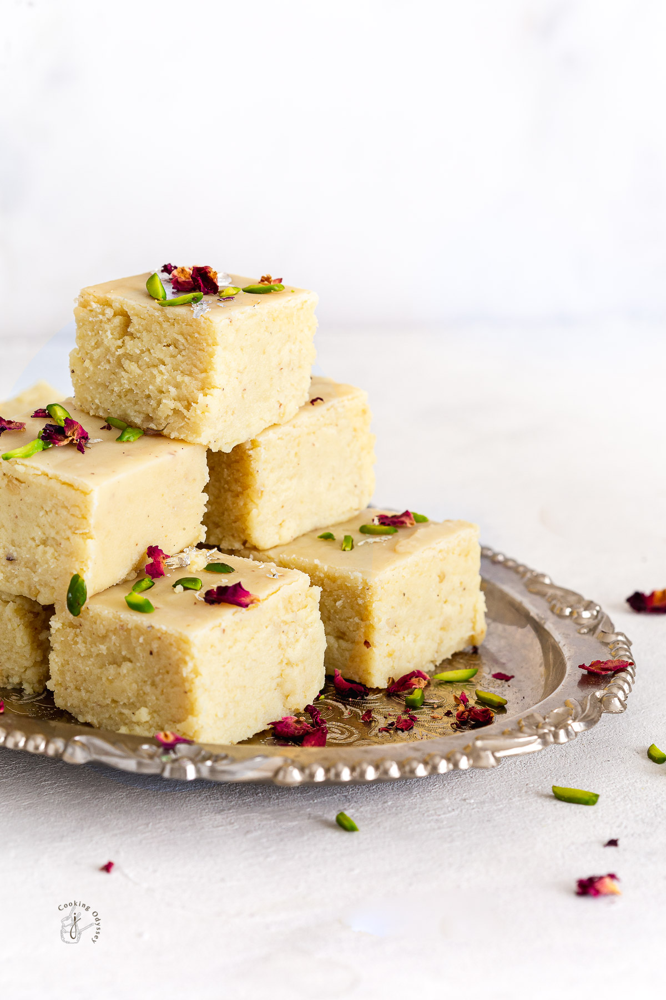
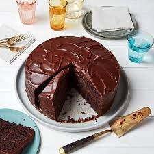
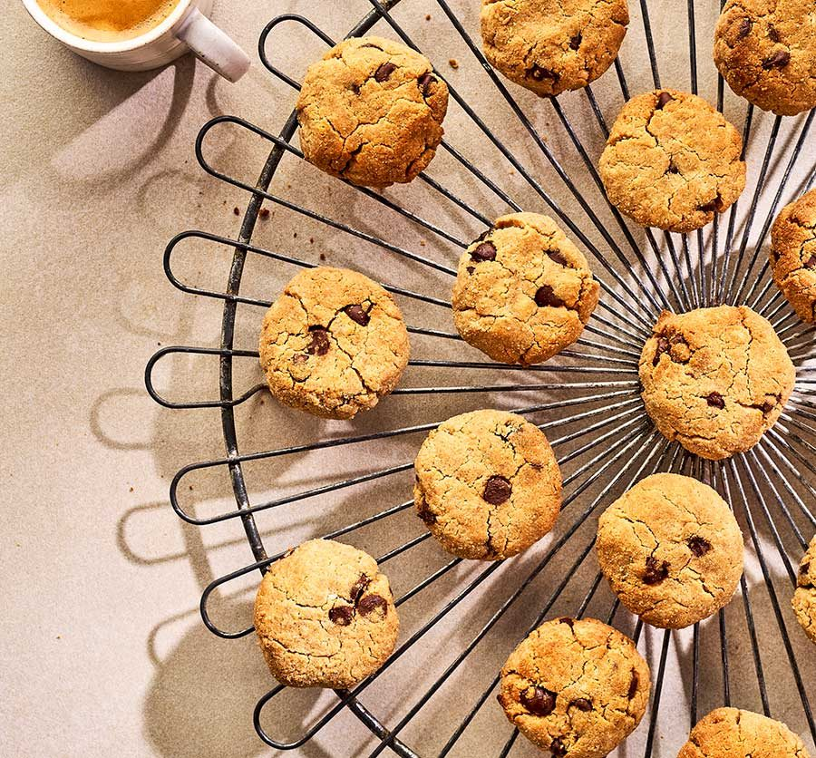
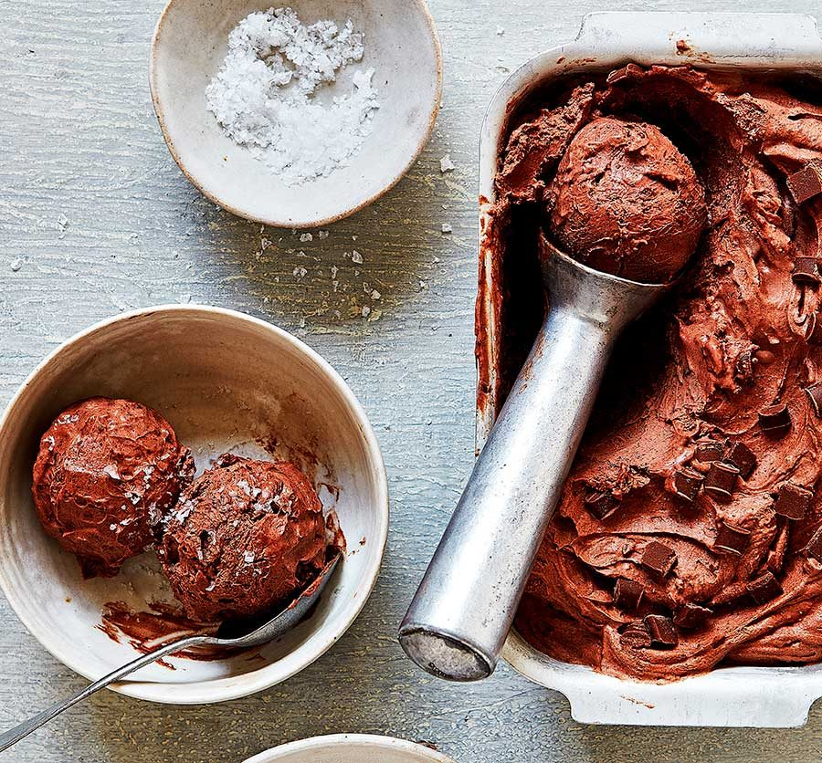

1. Gulab Jamun
Ingredients
- 1/2 tin - Nestlé MILKMAID
- 2 cups (200 gm) - Flour
- 600 gms - Grated Paneer
- 200 gm - Sooji/Rava
- 1½ tsp - Baking Powder
Recipe
- Boil sugar and water to prepare syrup remove from fire. Add cardamom and keep aside to cool.
- In a mixing bowl put the flour, paneer, sooji, Nestlé MILKMAID, baking powder and baking soda. Mix gently to make a soft dough. Do not knead too much.
- Divide the mixture into 30-35 portions and gently roll into round gulab jamuns. Fry in the oil at very low flame till golden brown in color.
- Keep putting the fried gulab jamuns in the prepared sugar syrup. Once all the gulab jamuns are in the sugar syrup bring it to a boil and remove from flame.
- Serve warm.
1.jpg)
2. Barfi
Ingredients
- 1/2 tin - Nestlé MILKMAID
- 1/2 cup Nestlé a+ Toned Milk
- 150 gms Kaju (Cashew nuts)
- 150 gms Khoya
- 50 gms Maida (All Purpose Flour)
Recipe
- Crush kaju to a fine powder. Put all the ingredients together and grind to a smooth paste.
- Transfer to a thick bottomed kadai and cook on a slow fire until the mixture starts leaving the slides and forms a ball.
- Put the mixture in a tray and roll out thinly (1/8”). Cool and cut

3. Chocolate Cake
Ingredients
- 1/4 tin Nestlé MILKMAID
- 1/4 cup Nestlé a+ Toned Milk
- 150 g Butter
- 150 g Powdered Sugar
- 3 Eggs
- 125 g Maida ( Flour)
- 3-4 tbsp (25 g) Cocoa Powder
- 1.5 tsp Baking Powder
- 1 tsp Vanilla Essence
- 4 tbsp Cocoa Powder
- 50 g Butter
Recipe
- Preheat the oven to 180° C. Lightly grease an 8-inch diameter baking tin and dust with flour.
- Sieve together maida, cocoa powder and baking powder. Keep aside.
- Soften butter in a bowl, add powdered sugar and beat well to a creamy consistency. Add Vanilla essence and mix. Slowly beat in the eggs one by one, then fold in the sieved maida mixture and mix well. Add milk and mix to get a dropping consistency.
- Pour the batter into the prepared baking tin and bake in the preheated oven for 40 -45 minutes or till tooth pick inserted in the center of the cake comes out clean.
- Remove from oven, cool for a while. Turn out over a wire rack or plate.
- For Fudge Icing: Mix together Nestlé MILKMAID, cocoa powder and butter and beat well. Microwave for 20 seconds, mix well.
- Spread over the cooled cake and leave to set. Slice and serve

4.Coconut flour cookies
Ingredients
- 75g coconut flour
- 60g coconut oil, melted
- 2 eggs
- 2 tbsp peanut butter
- 60g light brown soft sugar
- ¼ tsp baking powder
- 2 tbsp chocolate chips (optional)
Recipe
- Heat the oven to 180C/160C fan/gas 4 and line a baking tray with baking parchment. Put everything in a bowl and mix well until it's combined and has a wet sand-like consistency.
- Form 10-12 balls of dough roughly the size of a walnut and put onto the baking tray a few centimetres apart. Push down to create a disc a couple of centimetres thick, then put in the oven and bake for 12-14 mins, until lightly golden. Allow to cool for 10 mins before removing to a wire rack and cooling completely.

5.Chocolate ice cream
Ingredients
- 200g dark chocolate (at least 70% cocoa solids), chopped into small pieces
- 500ml double cream
- 340g can sweetened condensed milk
- 1 tsp vanilla extract
- 3 tbsp organic cocoa powder, sifted
- 50g milk chocolate chips
- sea salt flakes, to serve (optional)
Recipe
- Melt the chocolate in a heatproof bowl set over a pan of just-simmering water, ensuring the bowl doesn’t touch the water, or do this in the microwave in 20-second bursts until smooth and glossy. Leave to cool slightly. Pour the cream, condensed milk and vanilla into a second bowl and beat for 3 mins using an electric whisk until slightly thickened and the beaters leave a trail in the mixture when lifted across the bowl. Be careful not to overwhip, as you don’t want the mixture to be too stiff – as soon as the beaters leave a trail, it’s ready.
- Gently fold the melted chocolate and cocoa powder into the cream mixture until thoroughly combined, ensuring the spatula is reaching the bottom of the bowl so all the chocolate gets mixed in. Fold in most of the chocolate chips, reserving a small handful. Scrape the mixture into a 1-litre freezerproof container, then scatter over the reserved chocolate chips. Cover and freeze for at least 6 hrs until firm but scoopable. Will keep frozen for up to a month. To serve, scoop the ice cream into chilled bowls or ice cream cones and sprinkle with a pinch of sea salt, if you like.
